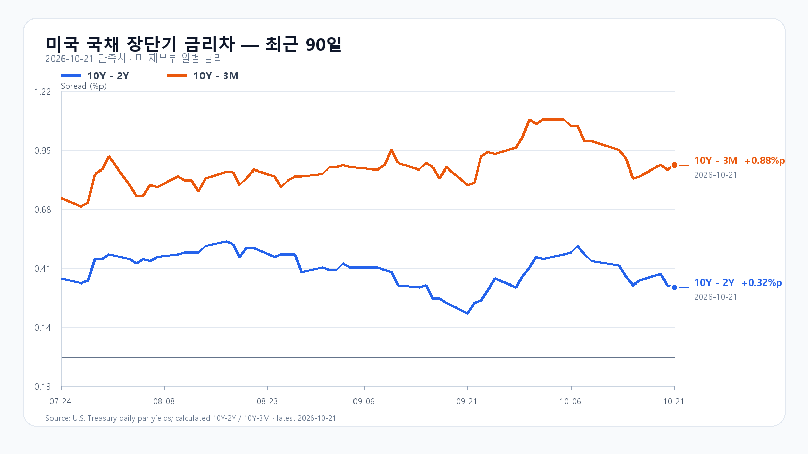
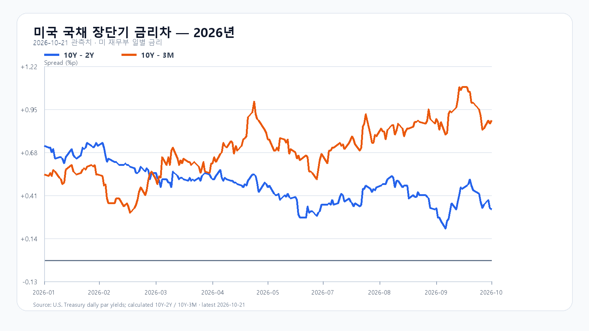

미국 반도체주는 올랐지만 장 마감 뒤의 분위기는 달랐습니다. 21일 정규장에서 SOXX는 2.07%, SMH는 1.89% 상승했습니다. 한국시간 오전 8시 무렵에는 Nvidia·AMD·Micron·Broadcom이 모두 정규장 종가 아래에서 거래됐습니다. 전일 3.29% 반등한 KOSPI는 오늘 금통위 결과와 국내 매수의 지속성을 함께 살펴야 합니다.
삼성전기가 합류한 Nvidia 공급망
Nvidia는 기판·패키징·테스트·광학 부품 생산능력을 늘리는 계획을 발표했습니다. 삼성전기는 기존 한국 생산시설로 기판 공급망에 합류하며 세종·부산의 시설 개선과 신설도 추진합니다. 관련 기판 업체들의 증설을 합쳐 Nvidia 제품용 생산능력을 향후 3년간 2.5배로 늘린다는 계획입니다. 국내 부품·장비 업체에는 AI 수요가 실제 설비 투자로 이어지는 발표입니다. Nvidia 발표
Amkor와는 한국의 첨단 패키징 생산능력 확대를 추진합니다. 2028년 말까지 인터포저 웨이퍼 생산능력을 300% 넘게 늘리는 것이 목표입니다. 다만 이 증설 계획을 삼성전자·SK하이닉스의 HBM 확정 수주액으로 환산할 수는 없습니다. 투자 일정과 실제 가동, 납품으로 이어지는 속도가 중요합니다.
정규장 반등 뒤에도 남은 실적 부담
정규장에서는 Nvidia가 2.54%, AMD가 3.36%, Micron이 1.96%, Broadcom이 1.03% 올랐습니다. 시간외에서는 Meta가 상승한 반면 Tesla와 주요 반도체 종목은 밀렸습니다. Tesla가 공개한 3분기 자료에는 GAAP 영업이익 약 7억달러, 순이익 약 8억달러가 담겼습니다. AI 투자 확대 소식만으로 모든 성장주가 함께 오르는 국면은 아닙니다. Tesla 실적 자료
전일 한국장에서 이미 알려졌던 AI 서버 실적 호재와 미국 정규장의 뒤이은 반응은 하나의 흐름으로 봐야 합니다. 한국장의 반등과 미국 상승을 독립된 호재로 모두 더하면 오늘의 상승 여력을 과대평가할 수 있습니다.
메모리 가격과 자금 비용은 별개다
21일 대만시간 오후 6시 10분 기준 DDR5 16Gb 현물 평균은 60.867달러로 0.28% 올랐고 DDR4 16Gb는 83.117달러로 0.30% 내렸습니다. 제품별 수급은 갈립니다. 이 현물 가격이 HBM과 서버 메모리의 계약 단가를 그대로 뜻하지는 않습니다. TrendForce
미 재무부의 21일 금리는 3개월물 4.25%, 2년물 4.81%, 10년물 5.13%입니다. 10년물과 2년물 차이는 0.32%포인트, 3개월물과의 차이는 0.88%포인트입니다. 높은 장기금리는 AI 설비를 짓는 기업의 자금 조달 부담으로 남습니다.
금통위 뒤에도 5,700선을 지킬까
전일 KOSPI는 5,666.34에 출발해 5,816.43까지 오른 뒤 5,735.66으로 마쳤습니다. 장중 저점은 5,630.14였습니다. 오늘은 5,700선 유지와 전일 고점 회복을 구분해서 봅니다. 금통위 결정 뒤 원화와 외국인·프로그램 매수가 같은 방향으로 움직이는지가 관건입니다. 한국은행 일정
기본 종가 범위는 5,600~5,800(50%)으로 봅니다. 외국인과 프로그램이 함께 순매수하며 5,800선을 넘기는 강세 범위는 5,800 초과~5,950(20%), 5,600선 아래에서 매도가 이어지는 약세 범위는 5,350~5,600 미만(30%)입니다. 5,800선을 다시 내주면 강세 판단을, 5,600선을 회복하면 약세 판단을 접습니다. 예상 범위를 벗어나는 변동도 가능합니다.
KODEX 레버리지는 전일 저점 69,220원을 첫 지지, 종가 71,740원을 반등 기준, 고점 74,365원을 저항으로 봅니다. 69,220원 아래에서 회복하지 못하면 지지 판단은 무효입니다. 한국은행의 오늘 결정과 미국시간 27~28일 FOMC를 앞두고, 개장 초 매수가 오후에도 이어지는지 확인할 필요가 있습니다.
장전 시세
| 항목 | 최근값 | 원천 시각 |
| 삼성전자 NXT (OPEN) | 222,000원 · -0.67% | 2026-10-22T08:08:33.216521+09:00 |
| SK하이닉스 NXT (OPEN) | 1,273,000원 · -1.62% | 2026-10-22T08:08:33.216534+09:00 |
| 하나은행 USD/KRW 고시 | 1,327.50원 | 2026-10-22T07:34:04+09:00 |
| NQF 최근 거래 | 29,856.00 | 2026-10-22T07:58:26+09:00 |
| ESF 최근 거래 | 7,775.50 | 2026-10-22T07:58:11+09:00 |
| CLF 최근 거래 | 98.04 | 2026-10-22T07:58:14+09:00 |
| BZF 최근 거래 | 110.05 | 2026-10-22T07:49:38+09:00 |
미국 시간외 최근 거래
| 종목 | USD | 종가 대비 | 원천 시각 |
| NVDA | 220.51 | -0.66% | 2026-10-22T08:02:54+09:00 |
| AMD | 545.50 | -1.31% | 2026-10-22T08:02:29+09:00 |
| MU | 903.79 | -1.08% | 2026-10-22T08:02:10+09:00 |
| AVGO | 335.35 | -0.73% | 2026-10-22T07:58:55+09:00 |
| META | 713.18 | +2.25% | 2026-10-22T08:02:58+09:00 |
| TSLA | 374.83 | -3.01% | 2026-10-22T08:02:58+09:00 |
미국 정규장
| 종목 | 종가 USD | 등락 |
| QQQ | 725.20 | +1.05% |
| TQQQ | 72.61 | +3.12% |
| SOXX | 510.36 | +2.07% |
| SMH | 556.70 | +1.89% |
| NVDA | 221.97 | +2.54% |
| AMD | 552.72 | +3.36% |
| MU | 913.67 | +1.96% |
| AVGO | 337.80 | +1.03% |


Nvidia 공급망 발표 · Tesla 공시 · Meta 실적 AP · DRAM 현물 · 한국은행 금통위 일정 · 미 재무부 금리 · 미국 시세 · 국내 일봉 · FOMC